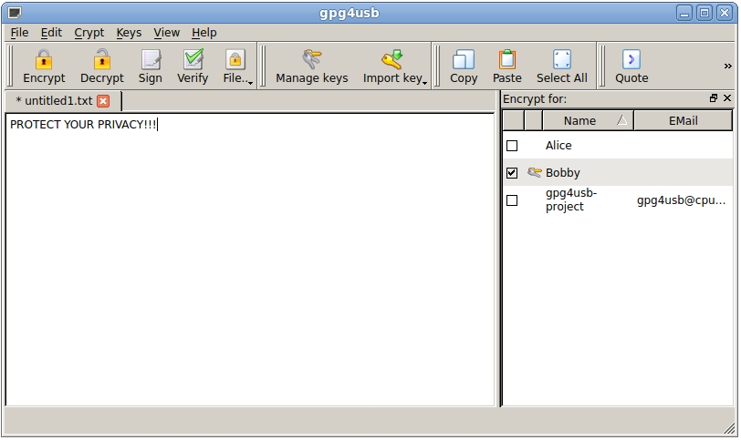
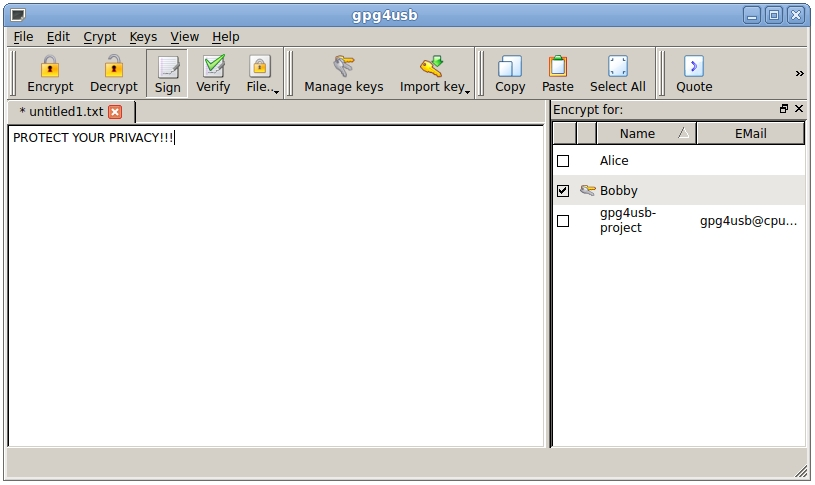
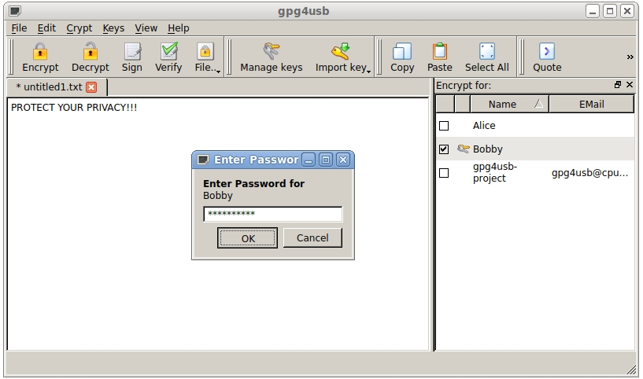

NOTE: You can only sign messages, if you have one private key, the file is encrypted for. You can identify the private keys by the "bunch of keys"-image in front of the name in the keylist (in this case Bobby):
There are three four for encrypting a text. We assume, that Bobby wants to sign a message. After this everyone who has his public key can verify the message and ensure, that the message wasn't modified.
First Bobby writes the message to the textedit-field. Then he checks his private key in the keylist.

Then Bobby clicks the sign button.

Now Bobby enters the passphrase of his private key.
NOTE: You can only sign messages, if you have a private key. The private keys are those, with the key-icon in front of the Name in the keylist.

Afterwards the signed message is shown.